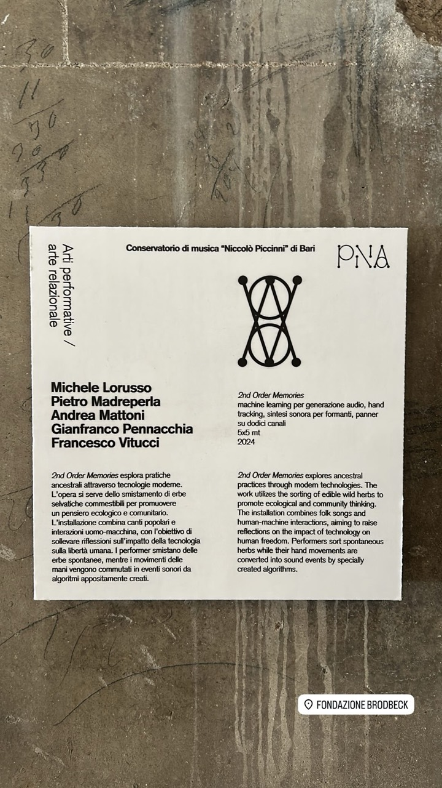

01
Audio
Borders’ Genesis
Uno studio sulla struttura formale, sulla sintesi granulare e sui punti di accumulazione.
- Anno
- 2022
- Ascolto
Audio
Uno studio sulla struttura formale, sulla sintesi granulare e sui punti di accumulazione.

Audiovideo
Generazione algoritmica audio-video. Un esercizio quotidiano.

Audiovideo
Il presente lavoro è stato selezionato all'OPEN CALL “VIDEO ART 2” di Artaporter e ha partecipato alla mostra collettiva dal 28 agosto al 3 settembre 2026 presso Con/Temporary Spaces a Torino. L'opera indaga il processo di accettazione dell’impossibilità di esercitare il controllo. Attraverso l’esplorazione di spazi liminali, l’opera attraversa i diversi stati che accompagnano questo processo. Il percorso ha inizio in uno stato di confusione, immerso in luoghi caotici e segnati dalla sofferenza. Il tentativo di ristabilire il controllo conduce progressivamente attraverso lunghi corridoi asettici, espressione di un’apatia generata da un rigore estremo, in cui ordine e controllo finiscono per diventare forme di immobilità. Infine, il percorso approda alla natura, dove emerge una possibilità di equilibrio: il caos non viene più combattuto né ricondotto all’ordine, ma accolto come condizione necessaria dell’esistenza. A livello tecnico, il lavoro è una composizione algoritmica generativa realizzata con un modello di sintesi audio basata su feature extraction mediante Wolfram Language e CSound. La parte visuale è stata realizzata utilizzando la fotogrammetria per la generazione degli spazi esplorati poi utilizzando codici audio-reactive scritti in TouchDesigner.

Audiovideo
Un primo risultato della ricerca sulla teoria sistemica applicata alla composizione audiovisiva algoritmica.

Audiovideo
Ispirato dal “Robot messaggero” di Stephen King: uno studio su spazio, mix, mastering e storytelling.

Video
Video generato in tempo reale e manipolabile mediante il tracciamento delle mani.

Audiovideo
Uno studio algoritmico su ritmo, sintesi FM particellare e campionatore, realizzato con TouchDesigner.

Installazione
Un’installazione che mette in relazione pratiche ancestrali e tecnologie contemporanee: i movimenti delle mani dei performer, mentre smistano erbe spontanee commestibili, generano eventi sonori attraverso algoritmi creati appositamente.
GitHub project
Strumento, libreria o esperimento software legato alla pratica di ricerca.